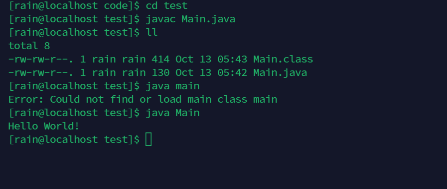
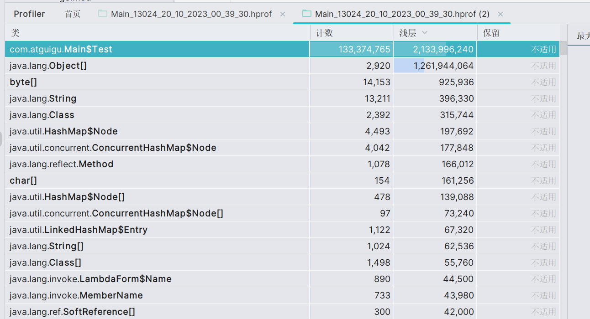

Jvm

概述
JVM是模拟物理机实现的将javac编译为.class文件，jvm支持平台无关性。 class文件通过类加载器-》解释器-》硬件沟通
Jvm基于HotSpot虚拟机架构同时也是基于栈实现的。与C语言不同，不同架构的操作系统编译输出的文件不同，jvm编译后产生的 文件完全相同。
由于执行一段程序需要不断地编译和反编译，将热点执行的代买柜内为热点代码再转换为机器码提高执行效率。同时jdk1.2之后支持使用JNI来 调用C/C++代码提升代码执行效率
指令
基本数据结构：堆栈+队列
常见的编译命令：
javap -g :vars xxx.java
反编译： javap -v .class文件地址
反编译后的代码栈顶元素作为操作数，当需要保存变量的时候，进入队列
部分变量某些关键字无法保存将会保存到常量池里面。例如bipush只支持单字节数据
环境部署
Linux下下载相关依赖
sudo yum install build-essential libxrender-dev xorg-dev libasound2-dev libcups2-dev gawk zip libxtst-dev libxi-dev libxt-dev gobjc
gcc 环境：

make

jdk环境：open-jdk8
Linux下编译结果：

编译Hello World：

手动编译jdk8部分
JVM内存管理
C/C++开发中，我们经常通过使用申请内存的方式来创建对象或是存放某些数据，但是这样也带来了一些额外的问题，我们要在何时释放这些内存，怎么才能使得内存的使用最高效，因此，内存管 理是一个非常严肃的问题。
#include <stdlib.h>
#include <stdio.h>
int main(){
//动态申请4个int大小的内存空间
int* memory = malloc(sizeof(int) * 4);
//修改第一个int空间的值
memory[0] = 10;
//修改第二个int空间的值
memory[1] = 2;
//遍历内存区域中所有的值
for (int i = 0;i < 4;i++){
printf("%d ", memory[i]);
}
//释放指针所指向的内存区域
free(memory);
//最后将指针赋值为NULL
memory = NULL;
}
一旦出现内存问题，我们就无法像C/C++那样对所管理的内存进行合理地处理，因为所有的内存操作都是由JVM在进行，只有了解了JVM的内存管理机制，我们才能够在出现内存相关问题时找到解决方案。
JNI
调用本地方法，调用C语言，关键字native,通过静态代码块调用C/C++的实现部分
public static void main(String[] args) {
System.out.println(sum(1,2));
}
private static native int sum(int a, int b);//原生的方法不可以具有函数实现
内存区域划分

- 内存区域划分为：方法区（线程共享），堆（线程共享），虚拟机栈，本地方法栈，程序计数器
- 方法区和堆栈随JVM生消，虚拟机栈，本地方法栈，程序计数器不共享彼此
创新作业：40页创新计划书，电子档2份，纸质档1份 商业模式和团队，按照第8章和第7章模式，12周周五交->老师办公室
-
程序计数器 ：作为内存地址，每个地址指向下一条即将指令执行，自动更新，在jvm字节码解释器工作时改变时改变值确定指令位置 public static void main(String[] args) { System.out.println(sum(1,2)); }
private static native int sum(int a, int b);//原生的方法不可以具有函数实现
-
虚拟机栈 （关键部分），内次当java虚拟机创建的时候即可同步一个栈帧（栈里面的元素），栈帧包含了当前方法的一些元素信息：（局部变量表，操作数栈，动态链接，方法出口）
虚拟机栈

每个栈帧保存一个可以指向当前方法所在类 的常量池，目的是：当前方法8中如果需要调用其他方法的时候，能够从运行时常量池中找到对应的符号引用，然后将符号引用转换为直接引用， 然后就能直接调用对应方法，这就是动态链接
 在虚拟机栈里面执行的行为就是对方法不断压栈出栈的过程，只有当所有方法出栈之后才可以执行主函数栈
在虚拟机栈里面执行的行为就是对方法不断压栈出栈的过程，只有当所有方法出栈之后才可以执行主函数栈
堆
作为虚拟机中最大的一块内存空间，区域职责是作为存放对象和数组，垃圾回收器也作用于此
方法区（重点）
所有程序共享区域，存储类信息，静态变量，动态编译缓存部分，分为两大部分：类信息表+运行时常量池
编译生成的常量也可以加入常量池里面。
面试题：String的常量池，常量池优化
String a="I am a student";
// String b="I am a student";
// String a=new String("I am a student");
// String b=new String("I am a student");
String a=new String("I am ")+new String("a student");
String b=new String("I am ")+new String("a student");
System.out.println(a.intern()==b.intern());
System.out.println(a.equals(b));
new方式
public static void main(String[] args) {
String str1 = new String("abc");
String str2 = new String("abc");
System.out.println(str1 == str2);
System.out.println(str1.equals(str2));
}
%使用==判断时，比较地址得到的结果false
%而使用equals时因为比较的是值，所以得到true
直接方式
public static void main(String[] args) {
String str1 = "abc";
String str2 = "abc";
System.out.println(str1 == str2);
System.out.println(str1.equals(str2));
}
%是因为我们直接使用双引号赋值
%会先在常量池中查找是否存在相同的字符串，若存在，则将引用直接指向该字符串；
%若不存在，则在常量池中生成一个字符串，再将引用指向该字符串：

intern方法(native方法。底层实现是C++)
public static void main(String[] args) {
//不能直接写"abc"，双引号的形式，写了就直接在常量池里面吧abc创好了
String str1 = new String("ab")+new String("c");
String str2 = new String("ab")+new String("c");
System.out.println(str1.intern() == str2.intern());
System.out.println(str1.equals(str2));
}
- （线程独有）程序计数器：保存当前程序的执行位置。
- （线程独有）虚拟机栈：通过栈帧，多线程里面的markword就维护在这里， 来维持方法调用顺序，帮助控制程序有序运行。
- （线程独有）本地方法栈：同上，作用与本地方法。
- 堆：所有的对象和数组都在这里保存。
- 方法区：类信息、即时编译器的代码缓存、运行时常量池。
内存爆炸和爆栈
int[]arr=new int[Integer.MAX_VALUE];
下面来个重磅的哈哈，直接爆栈4个G
static class Test{ }
public static void main(String[] args) {
List<Test> list = new ArrayList<>();
while (true){
list.add(new Test()); //无限创建Test对象并丢进List中
}
}

好家伙，我这里直接new了一亿个Test对象

虚拟机栈是有限制的，无线递归压栈将会导致虚拟机栈爆炸
申请堆外内存
Field unsafeField= Unsafe.class.getDeclaredFields()[0];
unsafeField.setAccessible(true);
Unsafe unsafe= (Unsafe) unsafeField.get(null);
long memory = unsafe.allocateMemory(4);
unsafe.putInt(memory,123);
System.out.println(unsafe.getAddress(memory));
获取类中定义的属性
Class.getField(properties name) //获取当前类的属性
Class.getSuperClass().getDeclaredField(properties name) //获取当前类的父类的信息